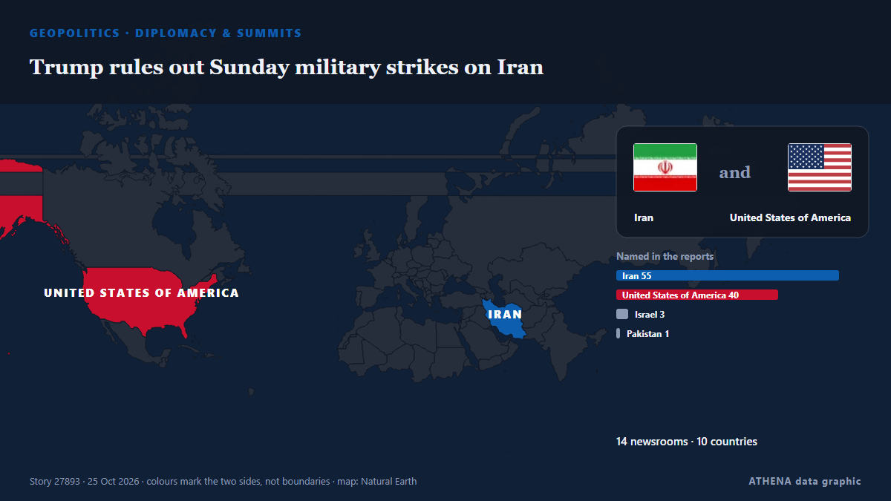

Trump rules out Sunday military strikes on Iran

US president claims control of Strait of Hormuz, calls US Navy's blockade 'unbelievable' de Anadolu Agency (English)
Relayé de façon indépendante par 14 médias dans 10 pays depuis le 24 oct. ; premier à l'annoncer : Kurdistan24 (English) ; la couverture continue de s'étendre. ATHENA juge le risque accru (4.0/10), surtout en raison de la gravité des dommages décrits et du rythme de la couverture. La confiance est de 92 % (élevée) : 14 médias indépendants le confirment, avec une fiabilité moyenne des sources de 77 %. Qui l'a rapporté : 4 médias en Azerbaïdjan · Azerbaijan, 3 médias en Irak · Iraq, 3 médias en Turquie · Turkey. La couverture s'est étendue de 24 oct. à 25 oct., sur 25 heures.
Pourquoi c'est important: Les évolutions de sécurité et de diplomatie peuvent déplacer alliances, échanges et marchés bien au-delà des pays directement concernés.
Ce qui a changé : 23 nouveaux articles de 14 rédactions dans les 24 heures jusqu'au 25 oct..
Premier titre : Trump says 'could strike Iran tomorrow, or strike a beautiful deal'
Les titres sont affichés en anglais, tels que publiés.
En un coup d'œil
Sélectionné, noté et rédigé par la méthodologie publiée d'ATHENA. Aucun rédacteur n'intervient sur un événement en particulier. Comment il est produit ›
| 24 Oct 16:28 UTC | 1 |
|---|---|
| 24 Oct 17:28 UTC | 0 |
| 24 Oct 18:28 UTC | 0 |
| 24 Oct 19:28 UTC | 0 |
| 24 Oct 20:28 UTC | 4 |
| 24 Oct 21:28 UTC | 1 |
| 24 Oct 22:28 UTC | 1 |
| 24 Oct 23:28 UTC | 1 |
| 25 Oct 00:28 UTC | 0 |
| 25 Oct 01:28 UTC | 1 |
| 25 Oct 02:28 UTC | 0 |
| 25 Oct 03:28 UTC | 0 |
| 25 Oct 04:28 UTC | 1 |
| 25 Oct 05:28 UTC | 0 |
| 25 Oct 06:28 UTC | 1 |
| 25 Oct 07:28 UTC | 2 |
| 25 Oct 08:28 UTC | 0 |
| 25 Oct 09:28 UTC | 1 |
| 25 Oct 10:28 UTC | 0 |
| 25 Oct 11:28 UTC | 1 |
| 25 Oct 12:28 UTC | 0 |
| 25 Oct 13:28 UTC | 0 |
| 25 Oct 14:28 UTC | 3 |
| 25 Oct 15:28 UTC | 0 |
| 25 Oct 16:28 UTC | 5 |
| 25 Oct 17:28 UTC | 1 |
| 24 Oct 16:40 UTC | 1.1 |
|---|---|
| 24 Oct 23:16 UTC | 2.1 |
| 25 Oct 00:12 UTC | 3.5 |
| 25 Oct 08:03 UTC | 3.8 |
| 25 Oct 15:32 UTC | 3.9 |
| 25 Oct 17:40 UTC | 4.0 |
Pourquoi ces chiffres
Importance
Risque
Confiance
La couverture : qui l'a annoncé, et quand
titre tel que publié · ouvre l'original- Kurdistan24 (English) · Irak · IraqUS Pulls Personnel From Mideast Bases Amid Iran Plot Warning
- Kurdistan24 (English) · Irak · IraqTrump: We May Attack Iran Tomorrow Or We May Get A Great Deal, Either Way We Win
- Anadolu Agency (English) · Turquie · TurkeyTrump says US could strike Iran ‘tomorrow’ or reach ‘big, beautiful’ deal
- Arab Times · Koweït · KuwaitTrump Says US Could Strike Iran as Early as ‘Tomorrow’ or Reach Deal
- APA (English) · Azerbaïdjan · AzerbaijanTrump: There's a possibility we may strike Iran
- TASS (English) · Russie · RussiaTrump weighs resumption of US strikes against Iran
- Middle East Eye · INTTrump says 'could strike Iran tomorrow, or strike a beautiful deal'
- Al Jazeera English · QatarIran war live: Saudi downs Houthi ballistic missile targeting Riyadh
- Iran International (English) · IranIran sends conflicting signals on US deal as Trump raises prospect of strikes
- NDTV · Inde · IndiaUS To Strike Iran Today? Trump Keeps World On Edge With "Maybe" Response
- Türkiye Today · Turquie · TurkeyTrump keeps Iran strike option open while floating deal
- Kurdistan24 (English) · Irak · IraqIran's FM: Another Strike On Iran Will Not Produce Different Results
- Indian Express · Inde · IndiaTrump warns of fresh strike on Iran today; Tehran claims it downed US drones
- Al Jazeera English · QatarTrump mocks reporter asking about Iran strikes, as Tehran says US derailed
- Al Jazeera English · QatarCENTCOM reportedly has plans for Iran strikes: Will Trump approve them?
- TASS (English) · Russie · RussiaTrump says choosing between making deal with Iran and ‘finishing it off’
- Anadolu Agency (English) · Turquie · TurkeyTrump rules out Sunday military strikes on Iran
- APA (English) · Azerbaïdjan · AzerbaijanNo plans for striking Iran on October 25 — Trump
- AzerNews · Azerbaïdjan · AzerbaijanDonald Trump keeps military option open amid Iran negotiations
- The National · Émirats arabes unis · United Arab EmiratesTrump has 'a decision to make' on Iran as concerns over renewed strikes deepen
- APA (English) · Azerbaïdjan · AzerbaijanTrump says choosing between making deal with Iran and ‘finishing it off’
- Arab Times · Koweït · KuwaitTrump Does U-Turn Again, Rules Out Immediate Iran Strike
- The Jerusalem Post · Israël · IsraelTrump rules out Sunday strike on Iran as Netanyahu warns Israel faces imminent existential threat